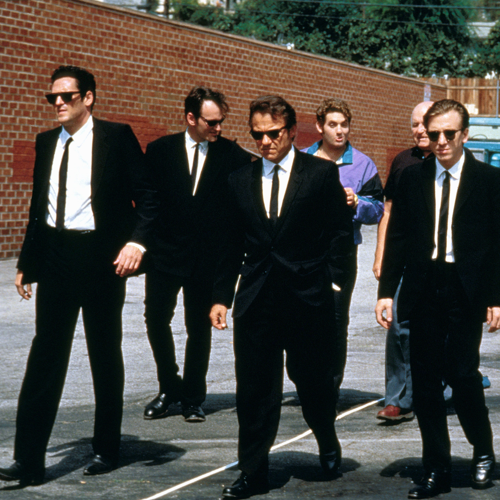

Quentin Tarantino and protagonists at the set of
the movie Reservoir
Dogs.
From
left to right; Michael Madsen as Mr. Blonde, Quentin Tarantino as Mr. Brown, Harvey Keitel as
Mr.
White,
Chris Penn as Nice Guy Eddie, Lawrence Tierney as Joe Cabot and Tim Roth as Mr. Orange
Here's some interesting facts about his life:
His middle name is Jerome.
He has Italian, Irish and Cherokee ancestry
He dropped out of school at the age of 16 to train to act at James Best Theatre Company.
However, he became bored of this after two years and dropped out.
He was an employee of video rental store Video Archives. Tarantino would observe what people
would like to watch and has claimed this influenced his directorial choices.
Tarantino wrote Inglourious Basterds inbetween writing Jackie Brown and the Kill Bill films.
He famously dislikes brand placements in films and creates imaginary brands to replace them
in
his own. These include the infamous Kahuna burger, as well as Red Apple Cigarettes, G.O.
Juice,
Jack Rabbit Slims and Teriyaki Donuts.
He enjoys the James Bond films and has said that he would like to direct one at some point.
He has won equal amounts of awards for Pulp Fiction and Django Unchained; five for each
film.
He has won two Academy Awards (both form Best Writing (Original Screenplay)), one Cannes
Film
Festival award (Palme d’Or), three BAFTA’s and several other awards, mainly for his
screenwriting, but also for his direction.
Tarantino has said that he intends to retire from filmmaking at the age of 60 to focus upon
novel and film literature writing.
A well-known quote, contained in a blockquote element.